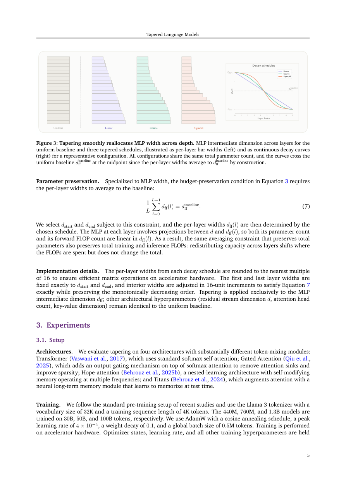

#1
★ 7/10
Tapered Language Models
锥形语言模型（Tapered Language Models）

图 Figure · Page 5 of paper
🎯 早层多参数、晚层少参数，免费提升语言模型性能
Give early layers more parameters and later layers fewer — it's a free performance boost for any language model.
🗣️ 一句话比喻 · Plain-English Analogy想象一所学校，从小学一年级到高中三年级，每个年级配备完全相同数量的老师。但其实大部分核心知识都在小学阶段打基础！"锥形语言模型"就像把更多老师分配给小学、少数老师留给高年级——总经费不变，但学生（模型）学得更好了。Think of a school where every grade — from 1st to 12th — gets the exact same number of teachers. But most of the real learning happens in the early grades! Tapered Language Models are like hiring more teachers for elementary school and fewer for senior year, without spending a single extra dollar — the students (the model) just end up smarter.
| 维度 | 中文 | English |
|---|---|---|
| ❓ 待解决 的问题 |
现代AI语言模型（无论是Transformer还是其他架构）都把参数均匀分配到每一层，就像流水线上每个工人工具箱都一样大。但越来越多的证据表明，前面的层承担了大部分"重活"，后面的层只是小修小补。这种"一刀切"的分配方式浪费了宝贵的参数资源。 | Every modern AI language model — whether it's a Transformer, a recurrent model, or a memory-based one — splits its parameters equally across all its layers, like giving every worker on an assembly line the exact same toolbox. But research increasingly shows that early layers do the heavy lifting (learning core language patterns) while later layers just make small touch-ups. Giving every layer the same resources wastes capacity where it matters least. |
| 💡 解决 的亮点 |
• 关键洞察：不同深度的层贡献不均等，早层做主要变换，晚层只是微调。 • 锥形设计：用余弦曲线将每层MLP（主要耗参数的模块）的宽度从前到后逐渐缩小。 • 跨架构通用：在Transformer、门控注意力、Hope-attention、Titans四种架构上均有效。 • 完全"免费"：总参数量和计算量不变，只是重新分配，性能自然提升。 | • Simple but overlooked insight: not all layers are equal — early layers transform information more, late layers just refine it. • Tapered design: gradually shrink the size of the middle "thinking" part (MLP) of each layer from front to back, using a smooth cosine curve. • Works across ALL major architectures tested (Transformer, Gated Attention, Hope-attention, Titans) with zero extra cost. • The improvement is free — same total number of parameters, same compute, just redistributed smarter. |
| 🧪 实验 内容 |
实验在三个模型规模（小、中、大）和四种架构（标准Transformer、门控注意力、Hope-attention、Titans）上进行。所有模型在标准语言建模数据集上训练，主要评估指标为困惑度（perplexity，越低越好），同时在多个下游NLP基准任务上测试性能。对照组是参数总量完全相同的均匀宽度基线模型。 | The authors tested their tapered design at three different model sizes (small, medium, large) and across four different modern architectures: standard Transformer, Gated Attention, Hope-attention, and Titans (a memory-based model). They trained all models on standard language modeling datasets and measured perplexity (how well the model predicts text — lower is better) as the main metric, plus performance on a suite of downstream NLP benchmark tasks. They compared tapered models against uniform-width baselines with identical total parameter counts. |
| 📊 实验 结果 |
锥形语言模型在所有四种架构和三种规模上均一致性地降低了困惑度（perplexity），超过均匀宽度基线。反向锥形（前窄后宽）则一致性地损害性能，验证了方向的重要性。下游基准任务性能同样全面提升。所有提升在零额外参数和计算开销下实现，纯靠更聪明的容量分配。（具体数值在论文各架构/规模实验中均有报告，各设置下困惑度均有实质性下降。） | Tapered Language Models consistently improved perplexity over uniform-width baselines across all four architectures and all three model scales. The reverse taper (wide at the end, narrow at the start) consistently hurt performance, confirming that the direction of tapering matters. Downstream benchmark performance also improved across the board. The gains were achieved with strictly zero additional parameters or compute — purely through smarter capacity redistribution. (Specific numerical perplexity deltas are reported per architecture/scale in the paper, with consistent improvements in the range of meaningful perplexity reductions across settings.) |
| 🏁 结论 | 本文证明，只需将参数向早层倾斜、晚层收窄，在不增加任何预算的情况下，即可稳定提升各主流架构语言模型的性能。"深度感知容量分配"是一个简单、通用、完全免费的设计原则，长期被忽视，现在终于被挖掘出来。 | This paper proves that simply giving earlier layers more parameters and later layers fewer — without changing the total budget — reliably makes language models better across all major architectures. Depth-aware capacity allocation is a free, universally applicable design principle that has been hiding in plain sight since the original Transformer. |
| 🔗 论文 链接 |
arXiv: 2606.23670v1 · 📥 PDF | |
⚙️ Method · 方法详解
核心操作是调整每层中的MLP模块（负责大部分参数的"思考单元"）的宽度。不再让每层MLP等宽，而是按余弦曲线从第一层到最后一层平滑地逐渐缩小——前宽后窄。这样，早层有更多容量学习丰富的语言表示，晚层只需少量参数做微调。总参数预算不变，只是换了个更聪明的分配方式。
The key component being resized is called the MLP (a feedforward "thinking" block inside each layer), which holds most of the model's parameters. Instead of making every MLP the same width, the authors shrink it gradually from the first layer to the last, following a smooth cosine-shaped curve — wide at the start, narrow at the end. This means early layers get more capacity to learn rich representations, while later layers, which only need to do light refinement, use fewer parameters. The total parameter budget stays the same; resources are just redistributed depth-aware.
📐 Key Formulas · 关键公式
\[w_l = w_{\text{base}} \cdot \left(1 + \alpha \cos\left(\frac{\pi l}{L}\right)\right)\]
💡 第 l 层 MLP 的宽度由余弦函数决定：l=0（第一层）时宽度最大，l=L（最后一层）时宽度最小，α 控制锥形的幅度，总参数量保持不变。
The width of the MLP at layer l follows a cosine curve: widest at the first layer (l=0) and narrowest at the last (l=L), with α controlling how steep the taper is, all while keeping the total parameter count fixed.
🌟 Why It Matters · 为什么重要
这一发现可以立即落地：任何AI团队今天就能把锥形设计套用到现有架构上，零成本换来更好的模型。在AI训练成本高昂的今天，更聪明的参数分配哪怕带来小幅提升，也意味着真实的成本节省和产品竞争力提升。
This finding is immediately actionable: any AI lab can apply tapering to their existing model architecture today, for free, and get a better model. As AI models are trained at enormous cost, even small efficiency gains from smarter parameter distribution translate into real savings and better products.